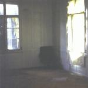

| Artist: | Scythe |
| Title: | Divorced Land |
| Label: | Galileo Records GR004 |
| Length(s): | 74 minutes |
| Year(s) of release: | 2001 |
| Month of review: | [03/2001] |
| 2) | Am I Really Here? | 9.29 |
| 3) | Faded | 1.51 |
| 4) | One Step Further | 14.24 |
| 6) | Access | 1.26 |
| 7) | Discussed | 8.05 |
| 8) | Naivety | 2.01 |
| 9) | Run | 7.15 |
The music on Am I Really Here? has quite some similarities to Discipline on their superb Unfolded Like Staircase, mostly in spirit, but also in the wat dramatic and quiet parts are alternated. Also the emotionality of both bands is about the same. The vocals are very different. The vocals of Thielen are hard to describe, they are can sound tortured, aggressive, but also somewhat tinny. The vocals on this track are more of the latter kind, but in the harder parts of the song, he shows more emotion in the singing. I think this is a voice to get used to, but I have to say that the vocals fit well with the music. In the middle we have an atmospheric intermezzo with echoey guitar and fluting keyboards. The final few minutes are dominated by the guitar with the piano playing repetitively in the back.
Faded is a short track with thoughtful bassplaying and percussion. One Step Further is like the two previous ones also present on Each Other, the demo cd the band made before signing to Galileo. The song opens with a quick but subdued rhythm section. Thielen sings his dreamy, somewhat whispered, melodic vocal lines. Soon the music takes a turn for the darker with meandering guitar and the drums going against the grain. The band has that typical prog tendency to often repeat a few dissonant bars, building up tension in this way. The keyboards also join in. The music becomes much harder edged here with the grating voice of Thielen, the fast paced drumming growing in intensity, and the guitar becoming rowdier. A jazz rock interlude then, followed by some wildy merry circus music. The music then becomes more normal again, and the chorus is repeated a few times, a bit louder everytime. Reading along with the lyrics, it seems that Thielen could do with a little better pronounciation. After another jazzy interlude, the music becomes more uplifting, and the music winds down to make itself ready for the anthemic finale, ending in a smorgasbord of intertwined a-capella vocals.
Like often happens, the guitar playing is somewhat in percussive, strumming way. The music sounds "older" here with a large role for a repetitive organ run. Very Genesis. This is where the similarities end. Afterwards, the music takes on a more dissonant character, moving more in the direction of King Crimson. Jazz piano time then and in fact the instrumental interlude features quite a few different fragments strung together, but to my ears in a sensible way. The vocal part that comes afterwards is a whispered one. The music at times also shows similarities with Swedish bands such as Sinkadus, especially during the parts where mellotrons and tense guitar work is present, as is the case during the final parts of this track.
Access is a quiet prelude for what is to come next. Melodic piano and mellotronic sounds with sparse percussion depict a dark landscape. Dicussed features quite a bit of pumping organ playing (reminiscent of Genesis), but also Hammillian vocals. Dark washes of guitar screams, percussion and dissonating piano accompany the melodic vocals.
Naivety is a short piece with the train running underneath the sound of a echoey guitar. Before we go to the closing opus we still have Run. A hasty sounding track, which reminds me of Supersister. There is also some flute on this track, giving the music a bit of a Sinkadus feel again. The band freaks out for a while in the middle returning with some Fender Rhodes jazzy stuff. After another vocal part we come to some rather melodic guitar playing which sound somewhat familiar.
Denied is the conclusion to the album. It all starts out somewhat willowy and waltzy. Again plenty of rhythmic variation in this track (actually I only know the details, because there is quite some information about the various signatures in the songs in the booklets). Wonderful vocal lines make for a first sad and longing vocal part. After the music falls away during the uplifting final passage, they of course return with more, making this song a could one to end the album with.